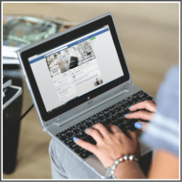

Facebook Marketing is another form of affiliate marketing in which marketers promote products on Facebook.
People who like to use Facebook.
1. Ability to create appealing facebook posts and images.
2. Ability to promote your page on Facebook.
3. Ability to persuade people with proper reasoning.
You can easily start Facebook marketing by creating promotional posts and create a Facebook page promoting a product.
This can be done within minutes.
1. Get more people to visit on your Facebook page.
3. Start promoting any affiliate product relevant to the Facebook page’s topic.
3. If possible, use Facebook ads to promote your posts and pages in a wider range of audience.
3. More people buy products from through affiliate link more money you make.